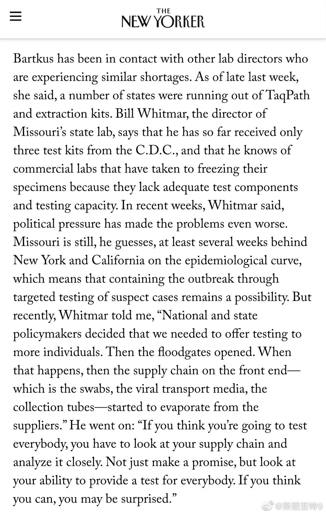
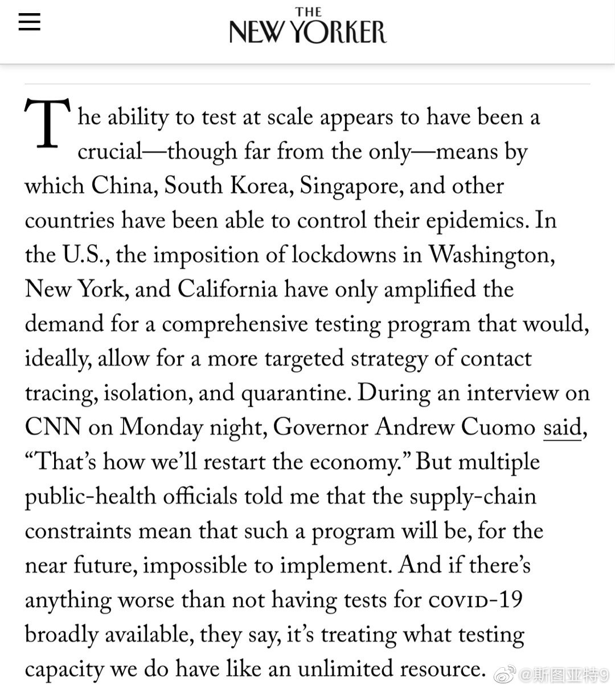

“纽约客”网站发了一篇长文讲美国的测试能力的状况。  网页链接 结论就是供应链短缺导致测试能力依然严重不足，而且现在的测试数量可能都无法持续。摘了一段，第一段说纽约市已经发通知说由于测试能力和口罩的不足，除非需要住院的病人，将不予测试。第二条说一种采样棍严重短缺。这个东西的主要生产厂正好在意大利的伦巴第大区，现已封锁所有商用飞机。一架美国军机飞到那运回来一百万个。第三条说，明尼苏达州还处在疫情早期，追踪感染源还是有可能的，但由于测试能力不足无法进行。第四条说纽约州州长说未来复工的前提条件是有大规模测试能力，一旦发现有人感染可以追踪感染源，但在可见的将来看不到这样的检测能力。最后一条是纽约测试实验室的主管告诉纽约市民，别测了，你不需要知道你是不是感染了。如果你咳嗽、发烧或者嗓子疼，那可能你就感染了。看完感觉真的的是好惨……💊么这是
网页链接 结论就是供应链短缺导致测试能力依然严重不足，而且现在的测试数量可能都无法持续。摘了一段，第一段说纽约市已经发通知说由于测试能力和口罩的不足，除非需要住院的病人，将不予测试。第二条说一种采样棍严重短缺。这个东西的主要生产厂正好在意大利的伦巴第大区，现已封锁所有商用飞机。一架美国军机飞到那运回来一百万个。第三条说，明尼苏达州还处在疫情早期，追踪感染源还是有可能的，但由于测试能力不足无法进行。第四条说纽约州州长说未来复工的前提条件是有大规模测试能力，一旦发现有人感染可以追踪感染源，但在可见的将来看不到这样的检测能力。最后一条是纽约测试实验室的主管告诉纽约市民，别测了，你不需要知道你是不是感染了。如果你咳嗽、发烧或者嗓子疼，那可能你就感染了。看完感觉真的的是好惨……💊么这是

- 
- 